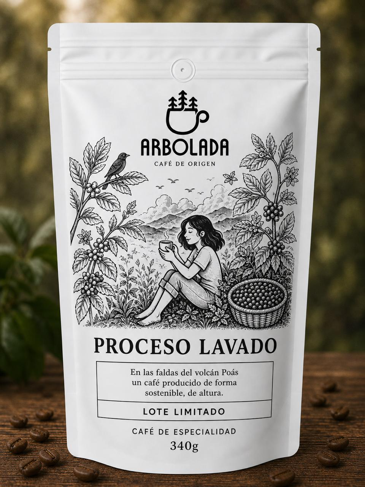
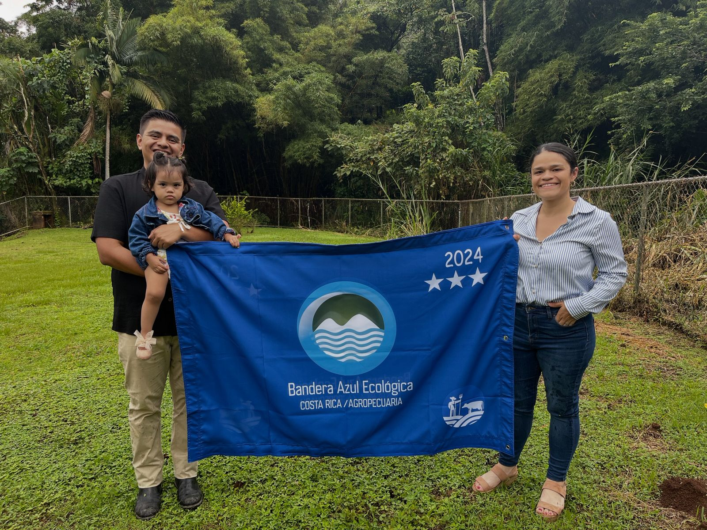
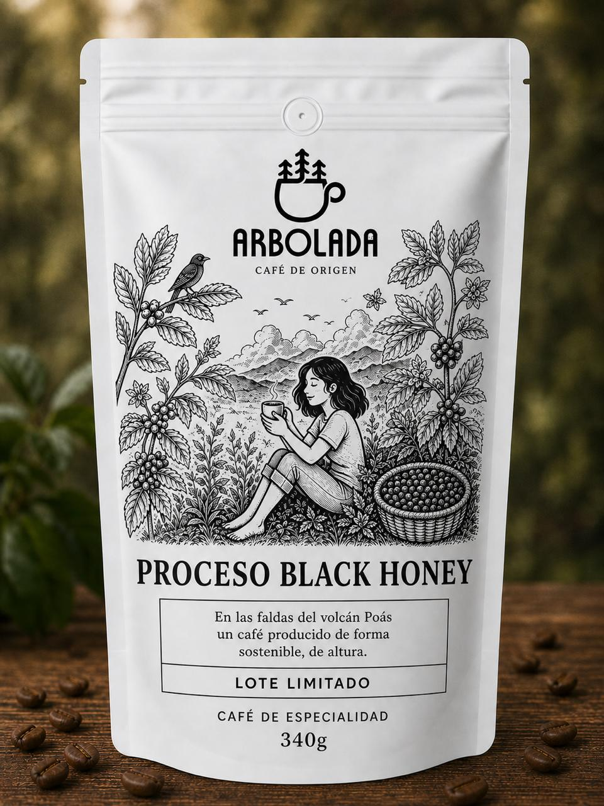
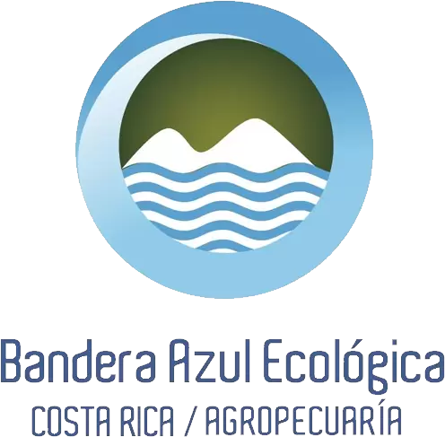
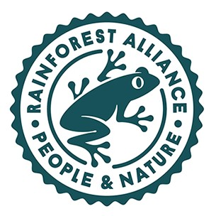

Proceso tradicional
Café Lavado
Cuerpo sedoso y acidez cítrica, con notas a chocolate, caramelo y frutos secos —almendra, avellana y nuez— y un toque especiado. Taza limpia y equilibrada.
Café de especialidad cultivado bajo sombra por cuatro generaciones, con prácticas que protegen la naturaleza.
Somos una familia cafetalera de cuatro generaciones, en las faldas del volcán Poás, cultivando café en los cantones de Grecia y Poás. Diana, Ingeniera agrónoma e hija de productores, junto a su esposo Félix, transformó la cosecha familiar en un café de especialidad.
Cultivamos con buenas prácticas agrícolas que aseguran sostenibilidad, porque creemos que el mejor café nace del respeto por la tierra.

“Nuestras prácticas sostenibles aseguran un producto sostenible y un legado para las siguientes generaciones.”
Cultivados y beneficiados con dedicación para expresar lo mejor de nuestra tierra volcánica.

Cuerpo sedoso y acidez cítrica, con notas a chocolate, caramelo y frutos secos —almendra, avellana y nuez— y un toque especiado. Taza limpia y equilibrada.

Dulce y frutal —mango, uchuva, melón y naranja madura—, con notas a toronja y ralladura de naranja. Cuerpo cremoso y acidez tartárica. Taza limpia y compleja.
Nuestras prácticas están respaldadas por certificaciones ambientales.

Galardón costarricense (Agropecuaria) a la gestión ambiental sostenible.

Certificación internacional de conservación de la biodiversidad.
¿Querés comprar nuestro café o distribuirlo en tu cafetería? Escribinos.
Escribir por WhatsAppGrecia y Poás, Alajuela · +506 8964-5797 · cafearboladacr@gmail.com · @cafe_arbolada